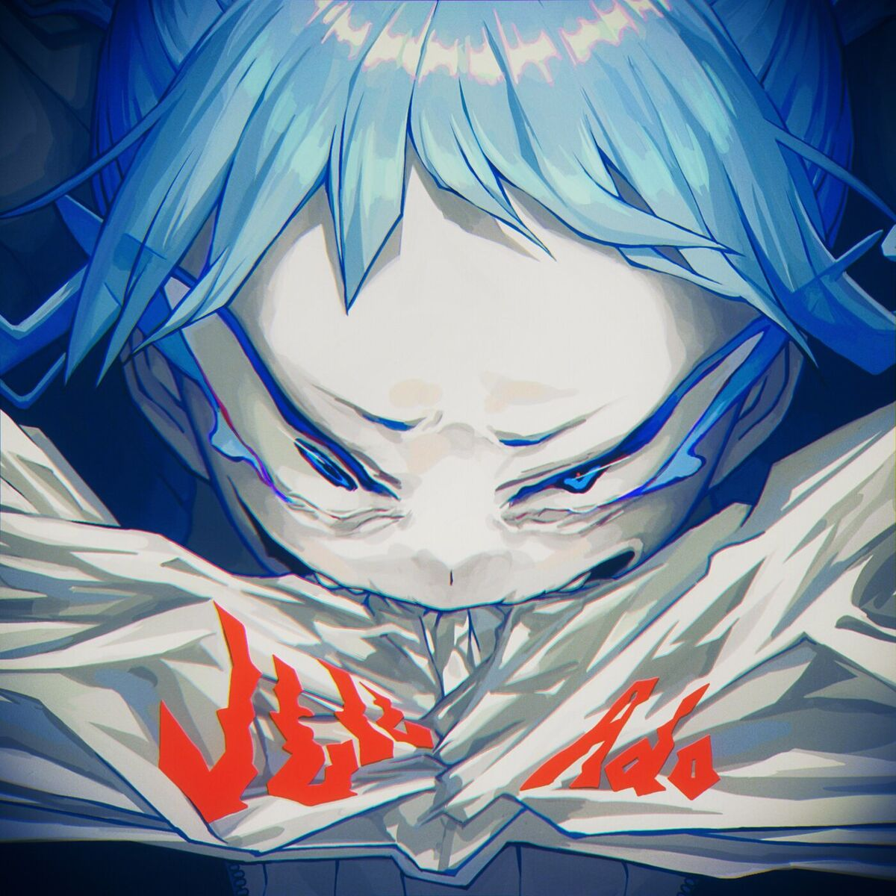

La voz que revolucionó el J-Pop desde las sombras
Soy una cantante japonesa que comenzó su camino en la música a través de internet, compartiendo mis interpretaciones como "utaite". Desde muy joven encontré en la música una forma de expresar mis emociones y mi forma de ver el mundo.
Mi carrera dio un salto exponencial con "Usseewa", una canción que se volvió el himno de una generación. Prefiero mantener mi identidad en secreto; para mí, la música debe brillar por sí misma, sin rostros ni etiquetas innecesarias.
"No necesito que me vean, necesito que me escuchen."

Comienza el viaje subiendo covers a plataformas digitales como utaite, ganando respeto en la comunidad underground.
Lanzamiento de su debut oficial. La canción rompe récords y se convierte en un fenómeno viral en Japón y el mundo.
Ado pone voz a Uta en One Piece Film: Red, dominando las listas globales con el álbum "Uta's Songs".
Consolidada como la voz más importante del J-Pop moderno, llevando su gira "Wish" a escenarios internacionales.